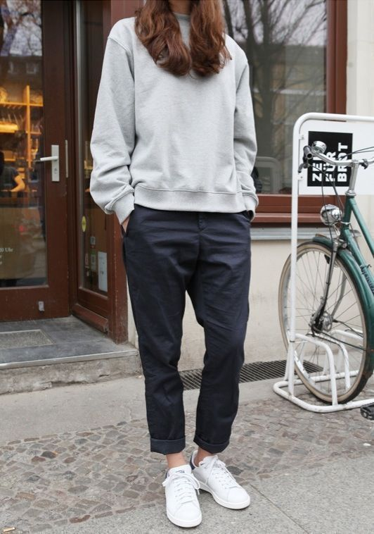
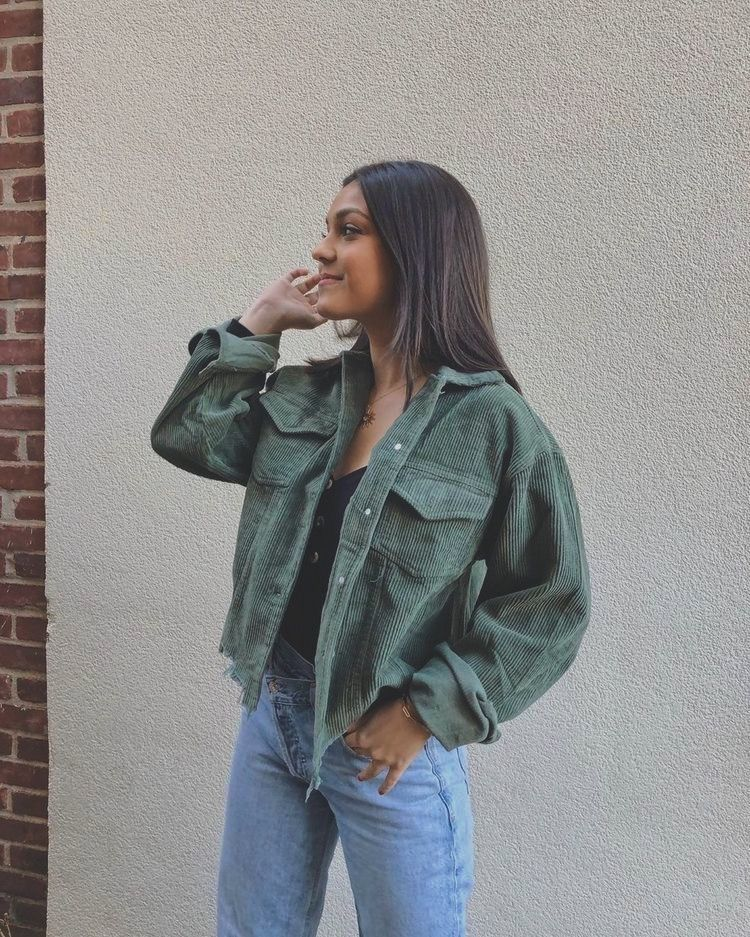
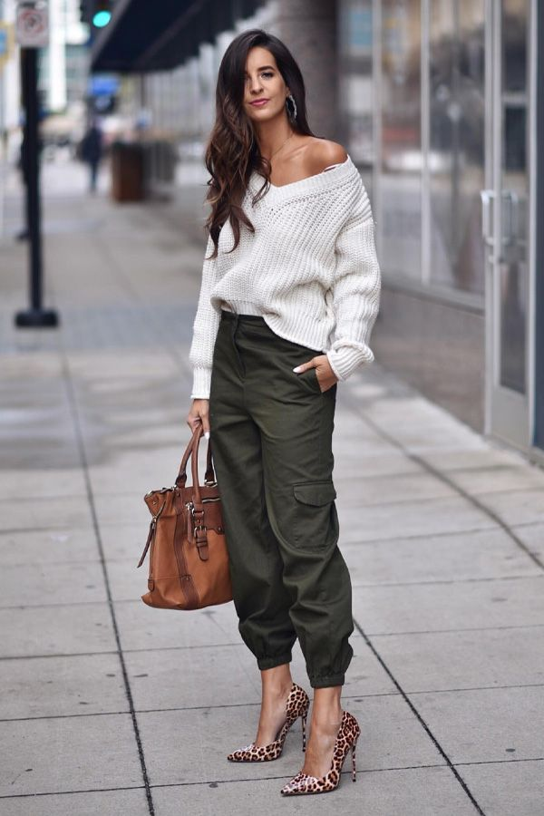
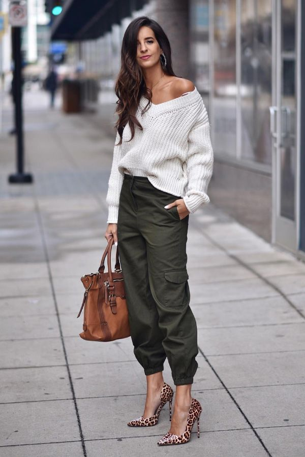
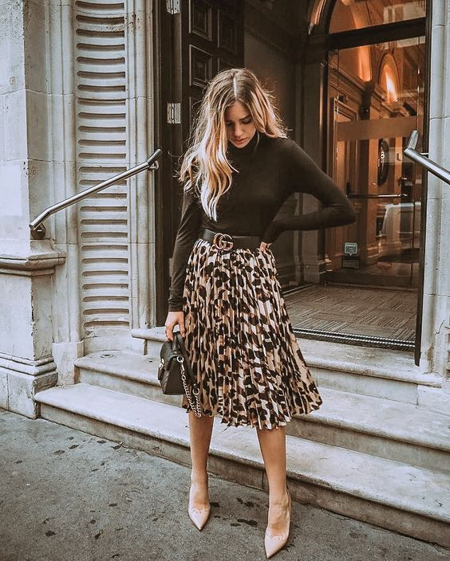
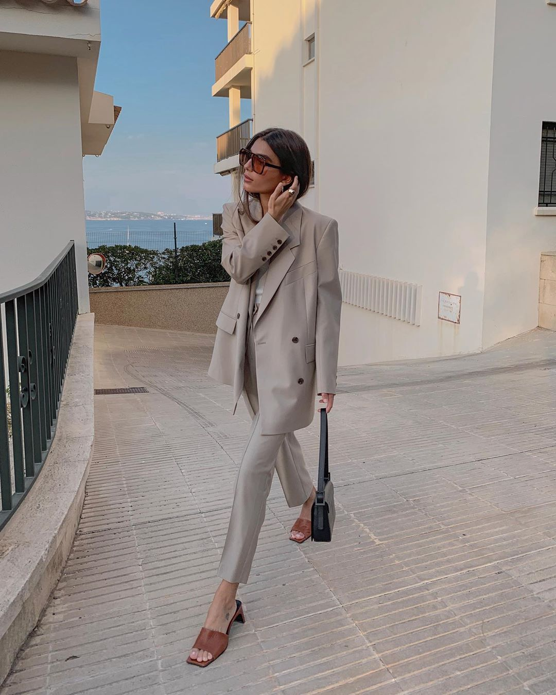
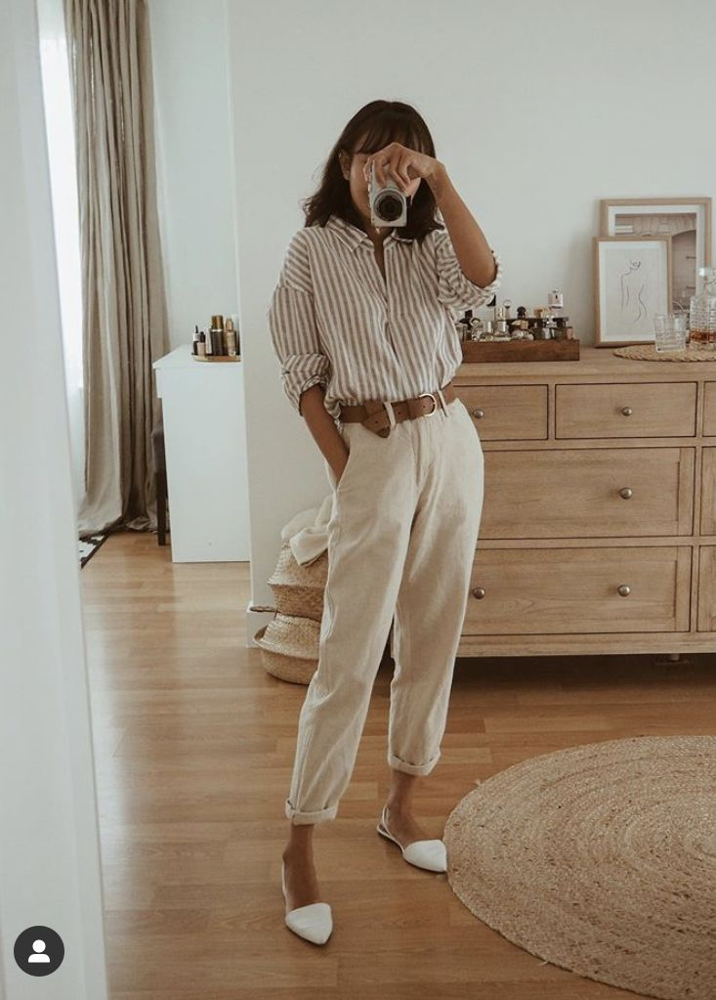
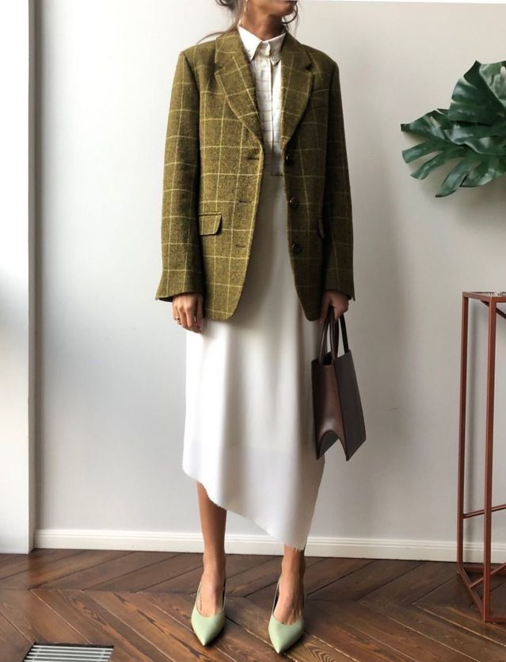

Повседневная одежда современной женщины отличается удобством и практичностью. Выбирая стиль на каждый день, основная часть прекрасной половины человечества отдает предпочтение простым предметам гардероба. Эти вещи, как правило, выполнены в духе минимализма с акцентом на функциональность.
Большая часть гардероба предназначена для повседневного применения и имеет ряд своих особенностей. Такими критериями можно назвать комфорт, простоту кроя, качество и натуральные составляющие материалов изделия и его практичность.
Основная линия повседневной одежды делится на четыре направления: simple casual, respect casual, smart casual и chic casual.
Отличается свободным кроем и непритязательностью композиции. Составление комплекта допускает вольные комбинации. Это могут быть брюки из эластичного материала, не сковывающего движений, джемперы, свитшоты, майки, куртки и кроссовки. Для такой группы характерны материалы, неприхотливые в уходе: хлопок, деним, вельвет и трикотаж.
 Основной задачей в составлении имиджа является гармония комбинаций и приятный внешний вид. Поэтому в линии нередко можно встретить однотонные изделия или варианты с небольшим неброским рисунком. Их гораздо проще комбинировать, а акцент на том, что можно и что нельзя станет лучшей рекомендацией в создании лука.
Линия интересна сочетанием несочетаемого. Такой неординарный подход способствует креативному имиджу и иногда становится новым направлением в коллекциях модных домов. Шик, подвластный только смелым модницам, привлекает немало внимания окружающих. При этом вещи смотрятся уместно, не забывая про женское начало.
 

Типичным выбором такой линии становятся дуэт джинсов с босоножками на высокой тонкой шпильке, вариант, объединяющий в ансамбль топ и шляпу. Неординарно выглядит композиция из спортивного трико и воздушного блейзера.
Smart Casual определяют привилегированный стиль, который присущ любительницам одежды высокого качества, подчеркивающей особый статус обладательниц. Направления буквально дышат женственностью и утонченностью натуры.
 Элементы классики отражаются на облегченном варианте костюма деловой женщины. Грациозный жакет сочетается с трикотажем, юбкой или узкими джинсами. Линия приветствует легкие шелковые и шифоновые блузы, тонкие водолазки, вязаные пуловеры в сочетании с кожаной обувью на невысоком каблуке. Наличие аксессуаров высокого качества внесет в имидж ноты изящества и непринужденности.
Стиль Respect Casual более строг, элегантен и сдержан. Вид такой повседневной одежды отличается респектабельностью. Часто в создании look принимают участие нежные цвета материала, подчеркивающие благородство и особенный статус женщины.
 Идеальный вариант может состоять из прилегающего жакета кремового цвета, надетого поверх белой блузы классического кроя. Светлые брюки и коричневые сандалии на высоком широком каблуке дополнят шиковый стиль, а шифоновый шарфик с контрастным принтом завершит лук.
На страницу о заботе и уходе о себе